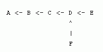
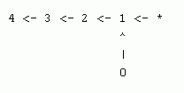
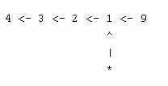
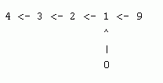

The cows keep getting in trouble by taking rides on Farmer John's tractor, so he has hidden the keys to the tractor in a fancy new safe in his office. Undeterred, the cows have vowed to try and break into this safe. The safe is protected by a rather complicated passcode system. The passcode entry system is arranged as a rooted tree of N (1 <= N <= 20,000) nodes, each of which requires a digit between 0 and 9. The nodes are indexed 0..N-1. The only information that the cows have is that certain sequences of length 5 do not occur along particular paths upwards through the tree. For instance, suppose the tree is the following (rooted at A):

The cows might know that the sequence 01234 does not occur starting at F, and that the sequence 91234 does not occur starting at E. This information rules out 19 possible passcodes: all those of the form

or

which gives 19 once we account for the fact that

appears twice. Given M (1 <= M <= 50,000) length-5 sequences, together with their starting nodes in the tree, help the cows figure out how many passcodes have been ruled out. You should compute your answer modulo 1234567.
有一棵N个节点的有根树,每个节点可以填0~9.
有M个事实,就是从X开始往祖先一直跑的的包含X的5个节点(保证X上面一定存在这样一条路径,也就是说X的深度至少为5),一定不是ABCDE.(0<=A,B,C,D,E<=9)
求,根据这M个事实,共有多少种给这棵树全部填上数的方案一定是不可能的.